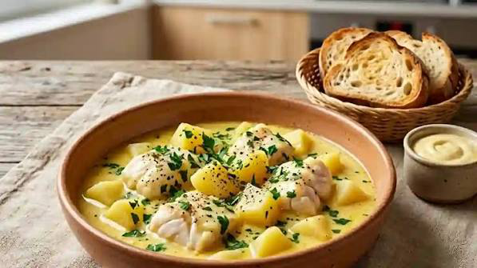

Bourride
sétoise


⟹ Plats Emblématiques ⟸
La bourride appartient à la grande famille des préparations méditerranéennes de poissons cuits dans un bouillon puis servis avec une sauce à l’ail. Son nom est généralement rapproché de l’occitan provençal bourrido, lié à l’idée de bouillir. Plus qu’une recette née en un jour, elle est l’aboutissement d’une très ancienne cuisine littorale : celle des pêcheurs qui transformaient les poissons disponibles en repas nourrissants, avec quelques légumes, de l’huile d’olive, de l’ail et du pain.

Il faut toutefois distinguer l’ancienneté de ce type de soupe de poisson de l’histoire précise de la bourride sétoise. Les textes et traditions culinaires du Midi montrent une parenté avec d’autres soupes et ragoûts de poissons du littoral provençal et languedocien, mais la version sétoise s’est progressivement individualisée par le choix de poissons blancs et surtout par l’emploi de la baudroie, nom donné à la lotte lorsqu’elle est entière ou dans le vocabulaire des pêcheurs.
Sète constitue un terrain particulièrement favorable à cette cuisine. Fondée au XVIIe siècle autour de son port, la ville a vu se rencontrer des traditions languedociennes, provençales, catalanes, italiennes et espagnoles. L’Office de tourisme de Sète présente d’ailleurs la cuisine locale comme une véritable « mosaïque latine » : pêcheurs provençaux et catalans, puis migrants italiens du golfe de Naples et autres populations méditerranéennes ont enrichi au fil du temps le répertoire culinaire de la ville.
La bourride sétoise se distingue de la bouillabaisse marseillaise. Elle privilégie les poissons blancs et, dans sa forme devenue emblématique, la baudroie, poisson à chair ferme qui supporte bien la cuisson. La sauce est liée ou accompagnée d’aïoli, émulsion d’ail et d’huile dont la puissance aromatique donne au plat son identité. Les pommes de terre et les légumes du court-bouillon complètent généralement l’ensemble.
La baudroie a longtemps été un poisson paradoxal : son aspect impressionnant contrastait avec la finesse de sa chair. Les pêcheurs savaient depuis longtemps tirer parti de sa queue charnue et ferme. À Sète, cette qualité en a fait un poisson idéal pour une préparation mijotée : les morceaux restent entiers dans le bouillon et peuvent ensuite recevoir une sauce généreuse sans se défaire.
Dans certaines traditions familiales sétoises, le foie de baudroie tient également une place recherchée. Poêlé ou travaillé à part, il peut accompagner les croûtons servis avec la bourride. Comme beaucoup de plats populaires, les détails varient d’une maison à l’autre : quantité d’ail, composition du bouillon, présence de vin blanc, légumes, manière d’incorporer l’aïoli ou de le servir séparément.
La bourride illustre ainsi une caractéristique essentielle de la cuisine sétoise : faire d’un produit de la pêche un plat complet grâce à des ingrédients simples du garde-manger méditerranéen. Pain, ail, huile, œufs, légumes et poisson forment une cuisine d’économie devenue cuisine de patrimoine.
Moins immédiatement associée à Sète que la tielle, la bourride demeure pourtant l’une des spécialités officiellement mises en avant dans le patrimoine gastronomique local, aux côtés de la macaronade, de la rouille de seiche, des moules et encornets farcis et des coquillages de Thau. Sa permanence dans les restaurants et les repas familiaux témoigne du passage d’un plat de pêcheurs à un véritable marqueur de l’identité culinaire sétoise.
Bourride royale : agrémentée de croûtons tartinés du foie de baudroie sauté et flambé au cognac.
Bourride au riz de Camargue : le riz remplace les pommes de terre en accompagnement traditionnel.
Bourride aux poissons blancs mêlés : baudroie associée à du bar, du turbot ou du colin selon la pêche du jour.
La bourride sétoise, moins touristique que d'autres spécialités, se déguste surtout dans les bonnes tables familiales de Sète.
Sète ville qui a fait de la baudroie la vedette incontestée de sa bourride, à découvrir dans les bistrots du port.
Halles de Sète où les poissonniers proposent la baudroie fraîche, tête et foie compris pour la recette royale.
Littoral languedocien tout le pourtour du golfe du Lion, où la recette se décline selon les arrivages de poissons blancs.
Restaurants traditionnels sétois qui perpétuent la cuisson lente et la liaison délicate à l'aïoli, sans jamais faire bouillir la sauce.